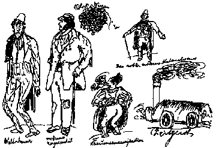

Letters of Frederick Engels
Written: June 15 1839
Source: MECW Volume 2, p. 453,
First published: in abridged in Die neue Rundschau, 10. Heft, Berlin, 1913, and in full in the book: F. Engels, Schriften der Frühzeit, Berlin, 1920
Fritz Graeber: Gentlemen, here you see modern characters and conditions.

June 15. Your letters arrived today. I decree that Wurm must never again post the letters. To come to business, I was already aware of the gist of what you say about Joseph’s family trees and have the following to say in reply:
1) Where can you find in any genealogical table in the Bible a son-in-law in similar circumstances being called a son? Unless you can mention one I can only regard this as a forced, unnatural explanation.
2) Why did Luke, who wrote in Greek for Greeks, who could not know this
Jewish custom, not expressly say for their benefit that it was as you state?
3) What is the point of Joseph’s genealogical table at all? It is superfluous since all three synoptic gospels expressly declare that Joseph was not the father of Jesus.
4) Why does a man like Lavater not resort to this explanation, but rather let the contradiction stand? Finally, why does even Neander — who after all is more erudite than Strauss-say that this is an insoluble contradiction, responsibility for which should be laid on the Greek scholar who worked on Matthew’s Hebrew manuscripts?
Furthermore, I do not propose to be dismissed so easily with my other points, which you call “miserable hair-splitting”. The teaching of literal inspiration is carried by the Wuppertalers to such a degree that God is supposed to have invested each word with a particularly deep meaning, as I have heard often enough from the pulpit. I can well believe that Hengstenberg does not share this view, for it is obvious from the Kirchen-Zeitung that he has no clear opinions whatever, but at one moment concedes to one of the orthodox something which the next moment he holds up as a crime when it is said by a rationalist. But how far does the inspiration of the Bible go? Certainly not so far that one Evangelist can make Christ say “This is my blood” [Mark 14:24] and another “This cup is the new testament in my blood” [Luke 22:2]. Why then did God who surely foresaw the dispute between Lutherans and Reformers not prevent this wretched conflict by such a very small intervention? If there is inspiration, then only two things are possible: either God did it deliberately in order to cause the conflict, something which I should not like to impute to God, or God overlooked it, which is ditto inadmissible. One cannot say that this dispute has brought forth any good, and it would be completely unwarranted and contrary to all probability to suppose that, after having divided the Christian Church for 300 years, it will have a good effect in the future. It is precisely the passage about the Lord’s Supper which is important. And if there is a contradiction here, then all faith in the Bible is destroyed.
I want to tell you quite plainly that I have now reached a point where I can only regard as divine a teaching which can stand the test of reason. Who gives us the right to believe blindly the Bible? Only the authority of those who did so before us. Yes, the Koran is a more organic product than the Bible, for it demands belief in its entire, continuous content. But the Bible consists of numerous parts written by different authors, many of whom do not even themselves make any claim to godliness. Are we supposed to believe it against our reason, simply because our parents tell us to do so? The Bible teaches that rationalists will be eternally damned. Can you imagine that a man who has striven for union with God all his life (Börne, Spinoza, Kant), indeed that someone like Gutzkow, whose highest aim in life is to find the meeting point between positive Christianity and the culture of our time, that after death people like these should be banished from God for ever and ever and suffer God’s wrath physically and mentally without end in the most fearful torments? We must not torment a fly for stealing our sugar, yet God is supposed to torment such men, whose errors are equally unconscious, ten thousand times more cruelly and for all eternity? Further, a rationalist who is sincere — does he sin by his doubting? Not at all. He would then have to suffer the most terrible pangs of conscience all his life; if he strives for truth, Christianity would have to overwhelm him with incontestable truth. Does this happen? Further, how ambiguous is the position of orthodoxy with regard to modern education? It is claimed that Christianity has brought education with it everywhere. And now all of a sudden, orthodoxy orders that education shall be brought to a halt in the middle of its progress. What is the point of all philosophy, for example, if we believe the Bible, which teaches that God cannot he known through reason? Yet, despite this, orthodoxy finds a little philosophy, only not too much of it, quite useful. If geology brings results different from what Mosaic primeval history teaches, then it is decried (see the miserable article in the Evangelische Kirchen-Zeitung entitled “Die Grenzen der Naturbetrachtung , [Evangelische Kirchen-Zeitung, March 20, 23 and 27, 1839]); if it brings results which seem to be the same as in the Bible, then it is appealed to. For example, it is appealed to if a geologist declares that the earth and the fossilised bones prove that there was once a great flood; but if another geologist finds evidence that these things belong to different ages and proves that these floods took place at different times in different places, then geology is damned. Is that honest? Furthermore: here we have the Leben jesu by Strauss, an irrefutable book; why does not someone write a devastating refutation? Why is this truly honourable man decried? How many have come out against him in the manner of a Christian, like Neander, and he is not one of the orthodox. Yes, truly, there are doubts, grave doubts, which I cannot refute. Then take the teaching about salvation. Why do we not draw from this the moral that if someone freely gives himself up for somebody else he should be punished? All of you would regard this as unjust; but shall what is unjust in the eyes of men be the highest justice in the eyes of God? Again, Christianity says: I free you from sin. That is what the rest of the world, the rationalist world, is also striving to bring about, and now Christianity steps in and forbids it to go on striving on the grounds that the path of the rationalists leads still further away from the goal. If Christianity could show us one single person whom it has made so free in this life that he no longer sins, then it would have some right to speak in this way; but until then, truly none at all. Again: Peter speaks of the reasonable, pure milk of the Gospel [1 Peter 2:2] I do not understand it. They tell me: This is enlightened reason. Now show me an enlightened reason to whom this is clear. So far I have not come across one; even to the angels it is a “high mystery”. — You think too well of me, I hope, to attribute all this to a sacrilegious scepticism or to boastfulness. I know that I am going to get into the greatest unpleasantnesses through this, but what forces itself on me so convincingly, I cannot drive away, no matter how much I might like to. If I should perhaps have hurt your conviction by my strong language, then I ask your pardon from the bottom of my heart. I only spoke as I think and as things have forced themselves on me. It is with me as with Gutzkow; when I come across someone who arrogantly dismisses positive Christianity, then I defend this teaching, which derives from the deepest needs of human nature, the longing for salvation from sin through God’s grace; but when it is a matter of defending the freedom of reason, then I protest against all compulsion. — I hope to live to see a radical transformation in the religious consciousness of the world-if only I was. clear about it myself! Still, that will come in due course, if only I have time to develop undisturbed and in peace.
Man is born free, he is free!
Your true friend
Friedrich Engels